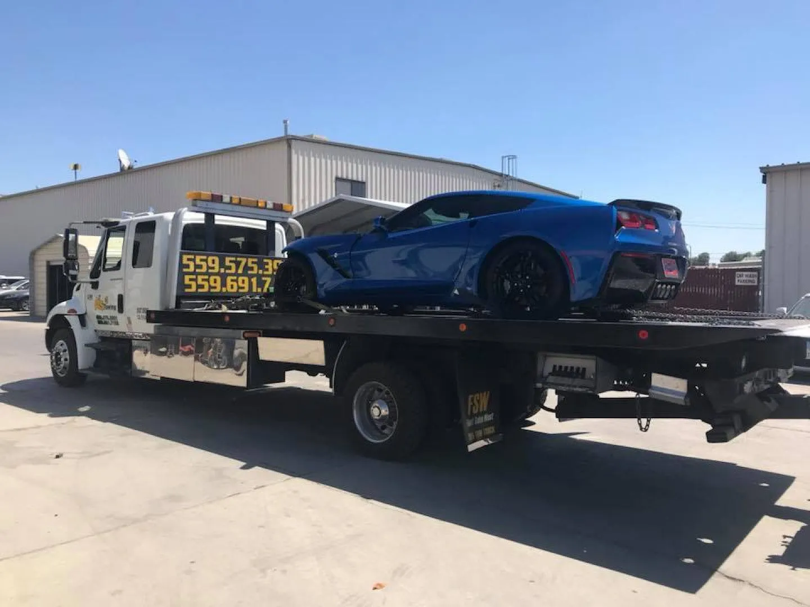

Local Fresno & Clovis Towing
Disabled vehicles can be moved to repair facilities, homes, storage locations and other approved destinations around the local area.
Local towing in Fresno and Clovis plus long-distance towing up to 500 miles from Fresno, depending on the job and availability.

Local and long-distance transportWhether the destination is across Fresno or hundreds of miles away, the tow should be planned around vehicle condition, pickup access and where it needs to end up.
Disabled vehicles can be moved to repair facilities, homes, storage locations and other approved destinations around the local area.
Select towing jobs can be transported up to 500 miles from Fresno. Availability and pricing depend on the route, vehicle and timing.
Vehicles in a ditch, mud or another difficult position may need controlled recovery before they can be safely loaded and transported.
Call with the pickup address, destination, vehicle type and current condition so availability and the right towing setup can be determined.